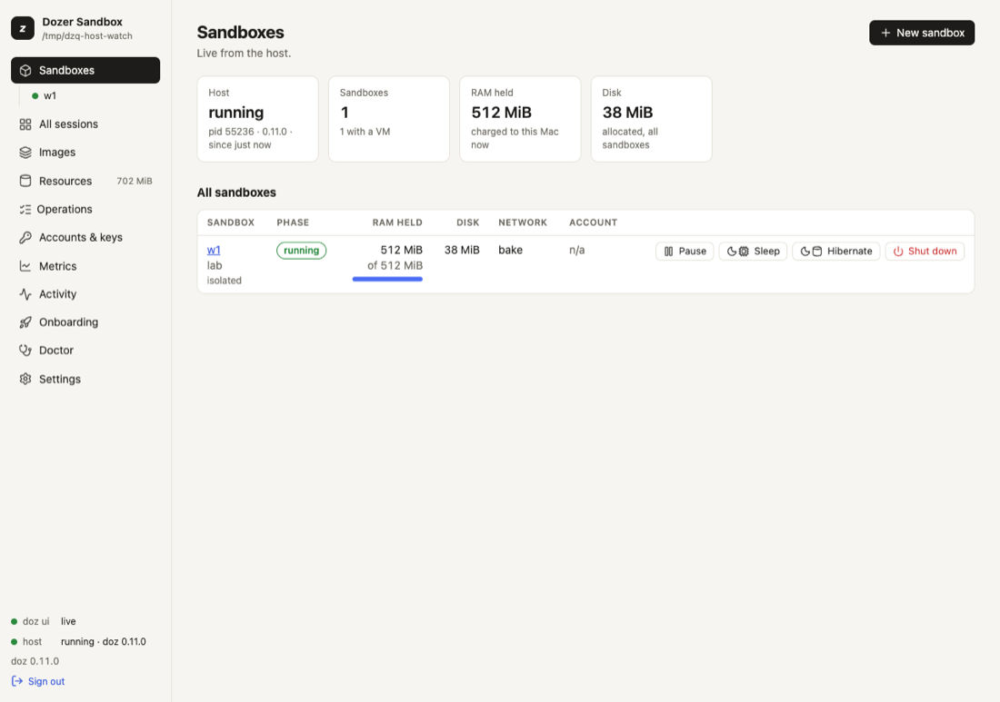
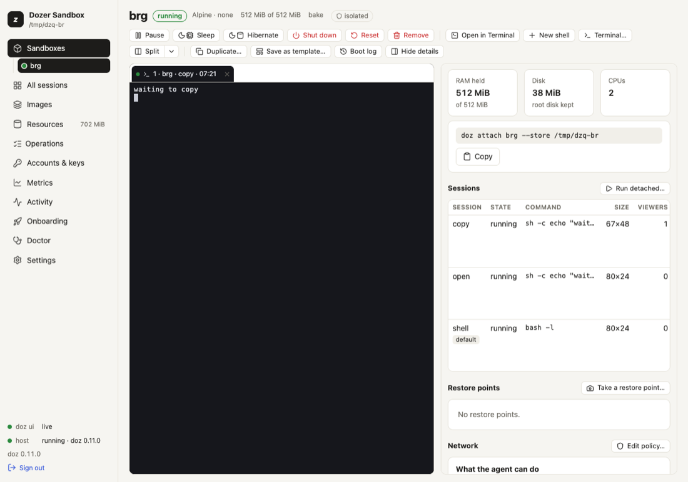
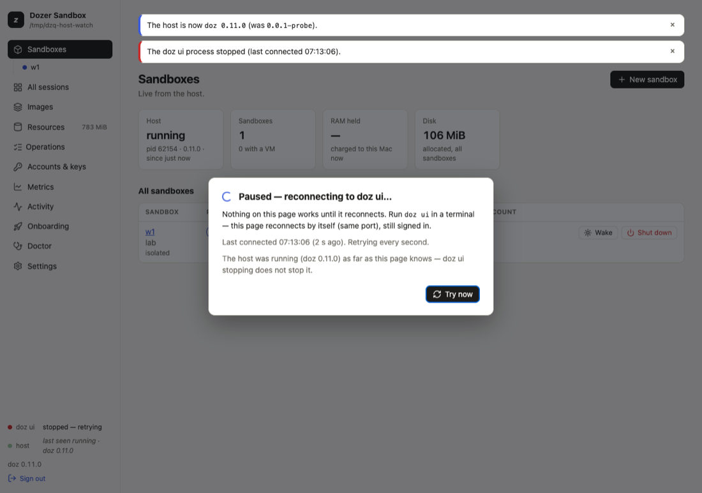

Chapter 6
The dashboard (doz ui)
doz ui is Dozer in your browser: every sandbox with a live terminal, its restore points and permissions, your images, accounts, disk use and settings.
On this page
doz ui is Dozer in your browser: every sandbox with a live terminal, its restore points and permissions, your images, accounts, disk use and settings. It does almost everything the command line does, and a few things are easier there — watching many sessions at once, or seeing what an agent was refused and allowing it with one click. It runs on your Mac only; nothing else can reach it.
Concepts#
- One dashboard per store. Running
doz uiagain reuses the one that runs. - A one-use sign-in link.
doz uiopens your browser with a link that works once, for five minutes, and signs that browser in — it stays signed in until you sign out or don't use it for 14 days (each visit renews it), so an installed dashboard app opens signed in. Nobody else can sign in without a link. - An app, if you like. Install it from Chrome or Safari and it opens in its own window with its own icon (see Install it as an app).
- A client of the host, like the command line. Opening the dashboard doesn't start the host; any action you take does, as a command would.
Start it#
doz ui # serve it and open it in your browser (the same as doz ui start)
doz ui --print-url # print the link instead of opening a browser
doz ui link # another browser or tab on the dashboard that runs
doz ui restart # restart the running dashboard: open pages carry on by themselves
doz ui --new-link # sign every page out and make a new link
doz ui --detach # run it in the background (no terminal needed), open it, and return
doz ui stop # stop the running dashboard — a detached one, or one in another terminalStop it with Ctrl-C in its terminal, or doz ui stop from any terminal. doz ui --detach keeps it running without a terminal (its log is the file ui.log in the store) until doz ui stop; doz ui restart keeps it in the background. The address is http://127.0.0.1:PORT — this Mac only. The port is the setting ui.port: 0 (the default) means the port this store's last dashboard used, when it's free, so a page left open reconnects by itself — still signed in — when you start doz ui again, and no new tab opens. If another program took that port, doz ui says which and listens elsewhere. For an installed app, fix the port, because an app belongs to one address:
doz config set ui.port 7443 # then: doz ui restart
doz ui start --port 7444 # one run on another portA fixed port that another program holds is never silently swapped: doz ui refuses to start and names the program. After doz ui restart onto a new port, the dashboard opens there in a new tab and the old page says where it went (a browser rule keeps a page from following by itself).
When a tab opens: only when none of the dashboard's pages is open (the setting ui.open_browser: auto). Set it to always or never, or use --open / --no-open for one run.
Treat a printed link like a password: anyone with it can sign in to your dashboard for those five minutes.
Install it as an app#
- Chrome (or Edge): on the dashboard, the address bar's install icon or ⋮ › Cast, save and share › Install page as app… — Install Dozer Sandbox. It opens in its own window, with the Dozer icon in the Dock and in ⌘-Tab, and shares Chrome's sign-in.
- Safari: File › Add to Dock. A Safari web app keeps its own cookies, so it opens on the dashboard's sign-in: paste a link from
doz ui link --print-urlinto its field.
When doz ui isn't running, the app (or a reload) shows Dozer isn't running on this Mac with what to run, instead of the browser's error page; it comes back by itself, on the view it was on, as soon as doz ui answers. The app needs nothing to stay running in the background.
The pages#

The sidebar groups the pages under four headings — Sandboxes (All sandboxes, each sandbox, All sessions), Store (Images, Resources), Activity (Operations, Activity, Metrics) and Setup (Accounts & keys, Settings, Doctor, Onboarding). The page you are on is the raised entry. In a window narrower than about 980 px the sidebar is a column of icons (hover one for its name); the button at its top shows the whole sidebar over the page.
| page | what it's for |
|---|---|
| All sandboxes | Every sandbox: state, RAM held, disk, network, account. Each row has the one likely next action (Start, Resume, Wake or Pause) and ⋯ for the state's other actions; click a row to open the sandbox. Quick add (every default, started and opened — also the + beside the Sandboxes heading in the sidebar; see The quickest way) and New sandbox (a wizard: every choice, step by step, written to the project folder's doz_project.yaml — see Projects). Under it in the sidebar, each sandbox has its own entry that opens its page; its dot is filled while the sandbox holds memory (running, paused, asleep), a ring when it holds none (hibernated, shut down), a square when it failed; a second dot at the right says what its agent is doing (see What the agent is doing). |
| A sandbox's page | See A sandbox's page below. |
| All sessions | A grid of live, read-only tiles: every session of every running sandbox, each with what its agent is doing. Click a tile to open it. |
| Images | The images and templates, each image's agent version, what's out of date (Rebuild — Remove… is under ⋯), disk shared and own, and the Lineage tree. |
| Resources | Every byte Dozer uses, and deleting what can go. A strip under the total jumps to each group (with its size); a group's heading folds it. See Resources and disk space. |
| Operations | Every action the dashboard (or a preparation) started: live progress, time taken, result. A spinner shows while any runs, and a red dot when one failed since you last looked. |
| Accounts & keys | Your Claude accounts: add, verify, make default, remove (under ⋯), keep-alive. |
| Metrics | How long each kind of action takes (count, median, p90…), filtered by image and time; download as CSV. |
| Activity | What the host is doing, live. |
| Onboarding | The setup wizard, again (in a window over the page, as New sandbox is). |
| Doctor | doz doctor's checks, with Run onboarding again. |
| Settings | Every setting, its value, default and description, and where its value came from; change it in place. Filter finds a setting by its key (ui.theme), its name or a word of its description; the strip under it jumps to a section, Access first. Folders on your Mac are never typed here: the projects folder has Choose…, your Mac's own folder picker; the others are set with doz config set. |
A sandbox's page#

- The title row: the name, its state, and labelled facts — Image, RAM, Network (with how many connections were refused; click it for the Network tab), Account — and isolated or rules when they apply.
- The toolbar: the state's actions as one group — led, for a sandbox that is shut down, paused, asleep or hibernated, by the action that brings it back (Start, Resume, Wake); Shut down apart, in red; ⋯ for Duplicate…, Save as template…, Boot log, then Reset… and Remove…. At its right: what is under way (or how the last action ended), and the button that shows or hides the details.
- The terminals, whose tab strip carries what makes or arranges them: New shell (its ▾: Terminal…, Run detached…), Split (its ▾ picks what a split adds) and Open in Terminal.
- The details, beside them in tabs: Overview (RAM, disk, CPUs, the attach command, the workspace and its rules, its sessions and last restore point), Sessions, Points (restore points), Network (What the agent can do, the rules, the connection log), Keys (keys and account) and Config (its configuration and the agent's environment prompt). The tab you chose is kept for each sandbox while the page is open; drag the details' left edge to widen them (320–560 px). Below about 760 px they move under the terminals.
Safety catches#
Reset, Remove, Revert and every delete ask you to type the name first. Shut down asks with a plain confirmation. Clicking an action again while it runs does nothing more.
When something fails#
A failure is said where you started it, and stays until you dismiss it or it is put right: in the dialog (which stays open), on the sandbox's toolbar or its row on All sandboxes, in the step of a wizard, in the setting's row — or, when it has no place on the page you are on, at the top of the page. The brief messages at the bottom right only ever say that something worked. Operations keeps every action's result either way.
Keyboard#
Every control shows a ring when it has the keyboard's focus. Arrow keys move within tabs, segmented choices and menus; Escape closes a menu or a dialog. Three page shortcuts: g then s opens All sandboxes, / the Settings filter, ? the list of shortcuts. None of them works while a terminal has the focus — there every key is the terminal's.
The host, watched#
The sidebar's footer shows the dashboard's connection and the host's state and version.
- The host stopped (
doz host stop, idle, or a clean quit): a banner says your sandboxes were hibernated, with Start host. - The host crashed or was killed: a banner names the sandboxes that were running (they are shut down; start them again).
- Another version of the host took over: a banner says so. If the host is older than the dashboard, Restart host asks first, hibernates what runs and starts the newer host (sandboxes wake when you use them). If the dashboard is the older one, restart
doz ui.
When doz ui restarts or stops#
A restart is routine — an upgrade, doz ui restart, the Mac waking up. For the first seconds the page says, calmly, Reconnecting to Dozer…; nothing behind it can be clicked meanwhile. When doz ui answers again the page carries on where it was, still signed in, with no reload:
- Terminals reattach by themselves, with their screens (what you typed while it was away is dropped, never typed later). An open New sandbox wizard keeps its choices.
- An operation that was running (a start, a wake) ends with what happened — the host carried it on — "finished while doz ui restarted", never a spinner that never stops.
- A newer doz ui (after
brew upgrade dozand a restart): a banner says Dozer was updated with Reload; the page reloads by itself as soon as nothing would be lost (no wizard or dialog open, no terminal you're typing in, nothing typed in a field).
If doz ui was stopped (Ctrl-C), or doesn't come back within 15 seconds, the overlay says what to run, when it was last connected and whether the host was running, with Try now; after a minute it adds the port the page expected. The page retries every second and comes back by itself when you start doz ui again (it says "doz ui restarted").

When the page must sign in again — after doz ui --new-link / doz ui link --rotate, after 14 days unused, or when you signed out — it says why and asks for a link inside the page: paste one from doz ui link --print-url (or open one with doz ui link). Everything on the page stays as it was while you sign in; its terminals reattach afterwards.
Terminals in the browser#
On a sandbox's page, a session's Open (in the empty terminal area, or the details' Sessions tab) attaches to it and Watch (its ⋯) shows it read-only; on the terminals' tab strip New shell starts a new shell (shell-2, shell-3, …) and its ▾ › Terminal… starts a new session — a shell or one running a command. Terminals are tabs; Split shows two side by side. Closing a tab only closes the view — the session keeps running. Each tab is titled like 1 · my-app · claude · 14:05 (the setting ui.terminal_title). Details, including the mouse, paste and the clipboard, in Terminals and sessions.
Open in Terminal opens the same session in your terminal app instead, via doz attach.
Keys in the browser#
With ui.allow_secret_entry on (the default), the wizard and Accounts & keys take an API key or setup token in a masked field, sent once and stored exactly as doz account add stores it. A sandbox's page can take a key of its own the same way. The dashboard never shows a secret: accounts and keys appear as a state, a source and a fingerprint. Turn it off with doz config set ui.allow_secret_entry false — the pages then show the commands instead. The dashboard can switch this off but never on.
Settings#
| key | default | what it does |
|---|---|---|
ui.open_browser | auto | When doz ui opens a tab: auto (only when no page is open), always, never. |
ui.port | 0 | The port on 127.0.0.1: 0 = the last one when free, or a fixed port 1024–65535 (for an installed app). |
ui.theme | auto | auto follows macOS; light; dark. |
ui.terminals | true | Terminals in the browser. false: none open (Open in Terminal still works). |
ui.terminal_font_size | 13 | Font size of a browser terminal (9–32). |
ui.terminal_title | {sandbox} · {session} · {time} | A terminal tab's title (and your terminal's, in doz attach). |
ui.split_default | shell | What Split opens: shell, watch, attach or dialog. |
ui.details_open | true | A sandbox's page shows its details (the tabs beside its terminals). |
ui.boot_view_on_start | true | Start opens a terminal on the boot. |
ui.confirm_shutdown | true | Shut down asks first. |
ui.grid_live_tiles | 8 | All sessions: at most this many tiles live at once (1–12). |
ui.grid_tile_size | medium | All sessions: small, medium, large. |
ui.progress | animated | How starts and preparations show their progress: animated or plain. |
ui.allow_secret_entry | true | The dashboard may take a key or token (see above). |
Limits and security#
- Loopback only, and every page, request and terminal checks the sign-in cookie, the exact host and origin, and a CSRF token on every change. For the dashboard on your other computers, tablets and phones, see
doz serve. - Terminals run in an isolated frame: whatever a sandbox prints can never reach your dashboard session, its cookie or other terminals. Links in terminal output aren't clickable.
- The dashboard alone never keeps an idle host running; an open terminal does, as
doz attachdoes.
Troubleshooting#
| symptom | what to do |
|---|---|
| "Sign in with a new link" | The link was used, expired, or every page was signed out: paste a link from doz ui link --print-url, or open one with doz ui link. |
| A terminal says "Disconnected" | It was silent a long time, or it could not reattach: Reconnect. (After a restart or a sign-in it reattaches by itself.) |
| "Dozer moved to 127.0.0.1:…" | ui.port changed and doz ui restarted there: use the tab it opened (an installed app: install it again from there). |
| The installed app shows "Dozer isn't running" | Start doz ui; the window comes back by itself. |
| "ui.port is …, and … listens on 127.0.0.1:…" | Another program holds the fixed port: stop it, or doz config set ui.port N (0 = automatic). |
| Two tabs open each time | Set ui.open_browser to auto (the default) or run doz ui --no-open. |
| Open in Terminal does nothing | Make a terminal app the handler for .command files: Finder › Get Info on any .command file › Open with › Change All… |
| "the resources are missing" | Reinstall: brew reinstall doz. |
Edit this page on GitHub · Chapter 6 of 25